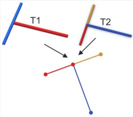
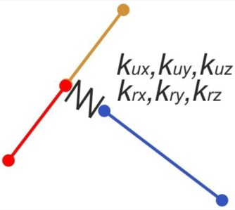
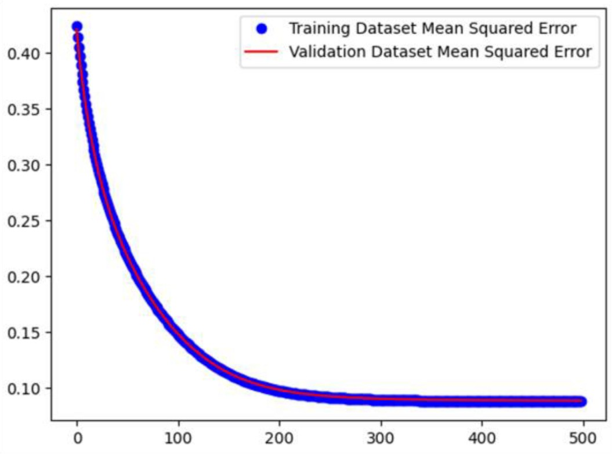

Problem A proof-of-concept study alongside senior engineers, predicting the stiffness of complex mechanical joints from their force–deflection response using a neural network trained on roughly 100,000 FEA simulations. Beam elements are widely used for tubular structures because they are computationally cheap, but their simplified formulation reduces two different junction geometries to the same representation:

To resolve this while keeping the efficiency of beam elements, a novel joint was devised: a junction built from six zero-length elements defining its stiffness in six degrees of freedom. The goal was to determine whether those stiffness values could be predicted by a neural network, using the force and deviation matrices as input — a proof of concept for ANN–FEM cooperation.

Approach I had almost no machine learning background at the time — one semester of coursework — and deliberately chose not to use ready-made libraries such as Keras or PyTorch. I did not want a black box; I wanted to understand how the method actually worked, so I built the entire network from scratch in raw Python. It took about a week and a half, and it worked. What I take from it is less the result than the approach: I chose the harder path in order to understand something properly, and taught myself a difficult subject quickly from first principles.
Outcome The published paper can be read here:
